CRM
No ERP da Olist, o CRM organiza os assuntos do funil de vendas. Em Vendas > CRM, você consulta esses assuntos em lista, por estágio ou por período, inclui um assunto novo e aplica marcadores.
Pela proposta comercial, você também consulta ou inclui um assunto sem sair desse contexto. A indicação de falta de interação, os marcadores e os estágios do funil ficam em Configurações > Configurações ERP > Vendas.
Instruções
Como consultar os assuntos
-
Acesse Vendas > CRM.
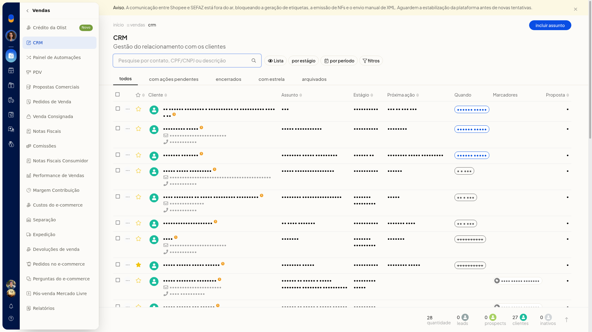
-
Na visão Lista, use as abas Todos, Com ações pendentes, Encerrados, Com estrela e Arquivados.
-
Confira as colunas Cliente, Assunto, Estágio, Próxima ação, Quando, Marcadores e Proposta.
-
Alterne para por estágio e escolha Sem filtro ou um dos estágios do funil.
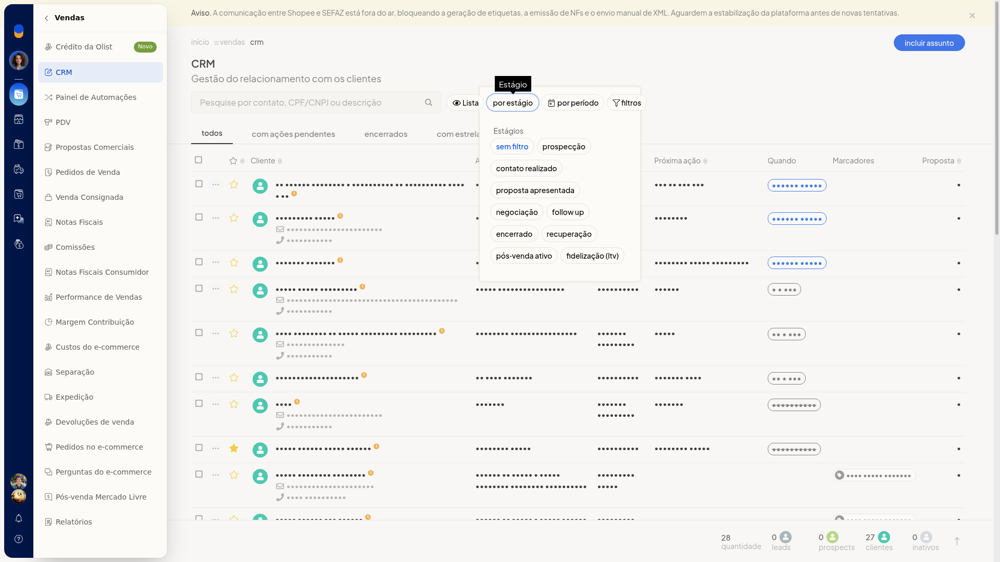
-
Alterne para por período e escolha Sem filtro, Do dia, Do mês ou Do intervalo.
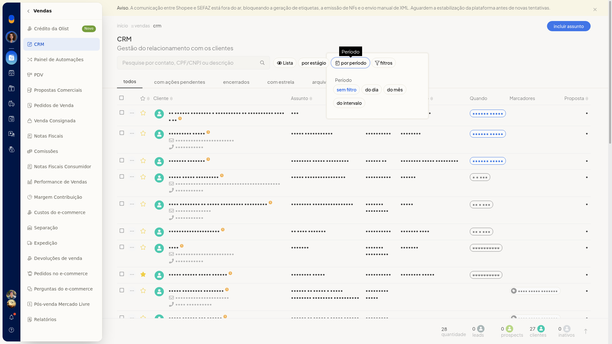
Como incluir um assunto
-
Acesse Vendas > CRM.
-
Clique em Incluir assunto.
-
Informe Cliente e Título do assunto. Nenhum dos dois é obrigatório.
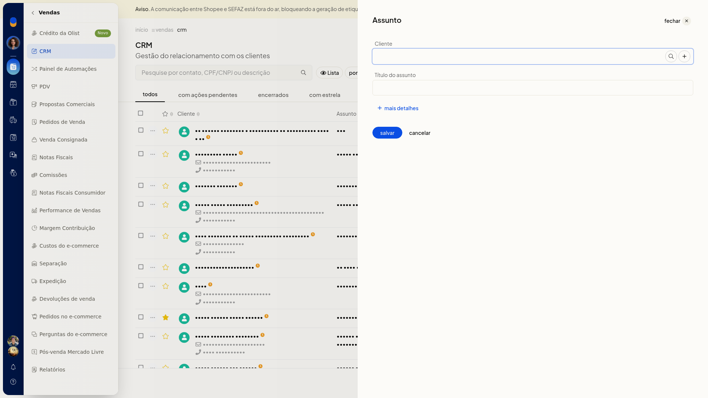
-
Clique em Mais detalhes e informe Pessoa de contato, Telefone, Ramal, E-mail, Departamento, Estágio e a pessoa de contato responsável. Esses campos não são obrigatórios.
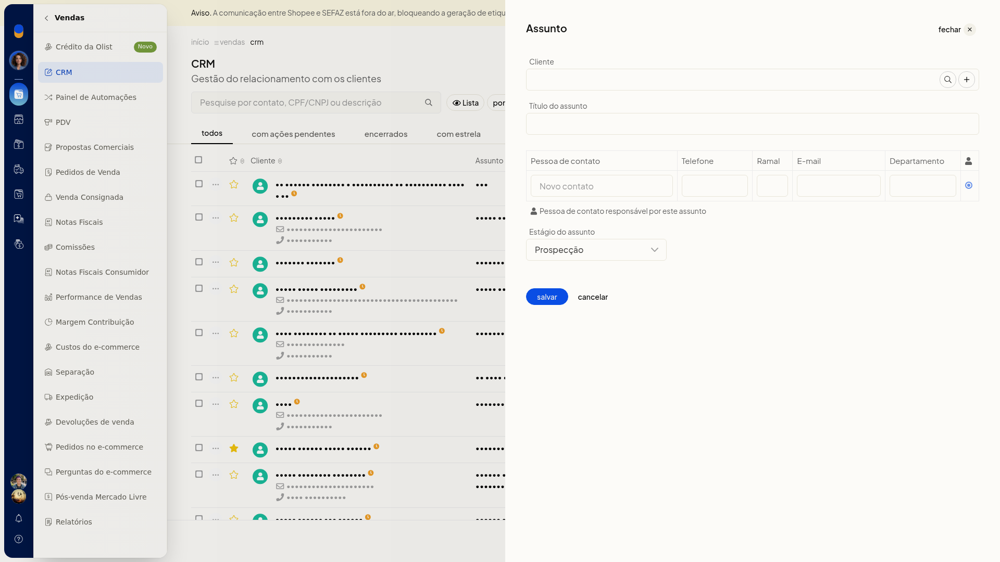
-
Em Estágio, selecione Prospecção, Contato realizado, Proposta apresentada, Negociação, follow up, Encerrado, Recuperação, Pós-Venda Ativo ou Fidelização (LTV). Prospecção já vem selecionado.
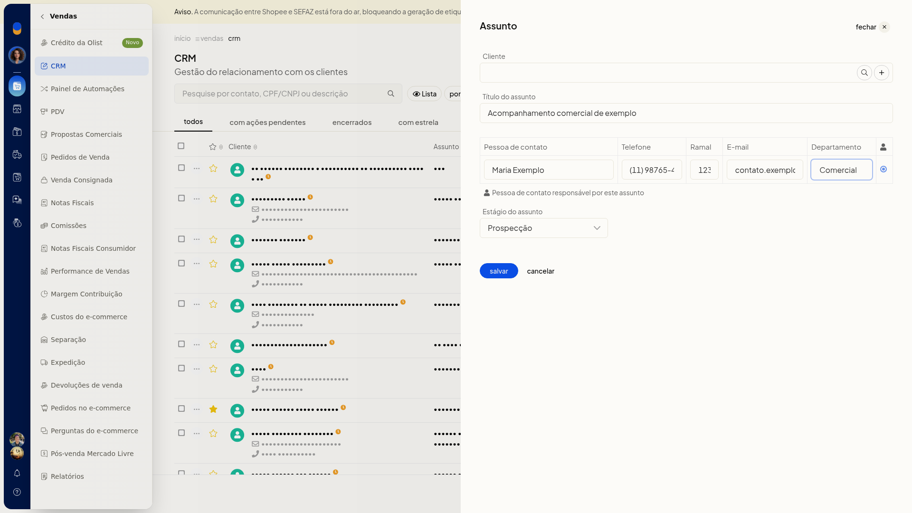
-
Clique em Salvar para gravar o assunto. Cancelar descarta o assunto e volta à lista.
Como incluir um assunto a partir da proposta
- Acesse Vendas > Propostas Comerciais.
- Abra o menu da linha da proposta e clique em Ver assuntos no CRM para consultar os assuntos ligados a ela, ou em Incluir assunto no CRM para abrir um assunto a partir da proposta.
Como filtrar os assuntos
-
Acesse Vendas > CRM.
-
Abra filtros.
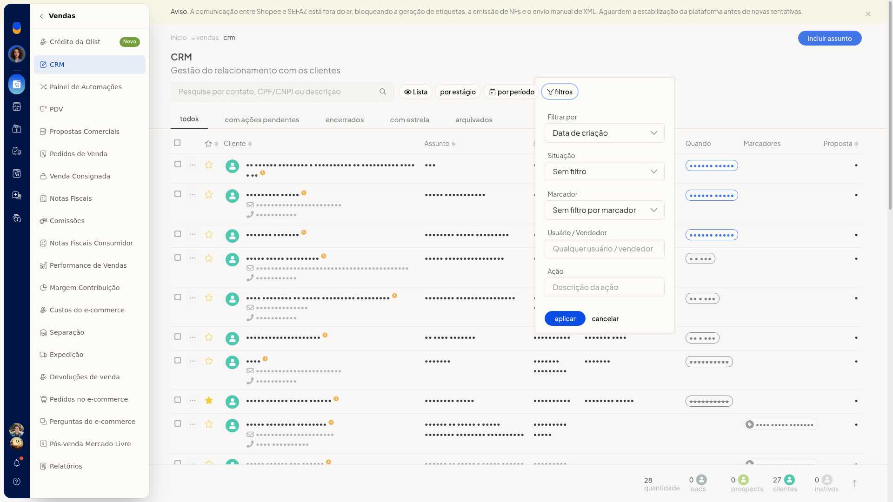
-
Filtre por Data de criação, Data prevista, Quanto antes ou Esperar.
-
Em situação, escolha Sem filtro, Lead, Prospect ou Cliente.
-
Em marcador, escolha Sem filtro por marcador ou um marcador já cadastrado.
-
Use também usuário/vendedor e ação.
Como marcar um assunto
-
Em Vendas > CRM, abra o menu da linha do assunto.
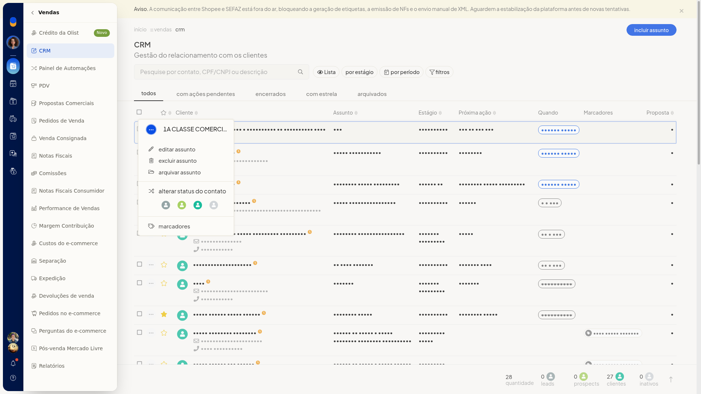
-
Clique em Marcadores.
-
No campo Marcadores, informe os marcadores separados por vírgula ou tab.
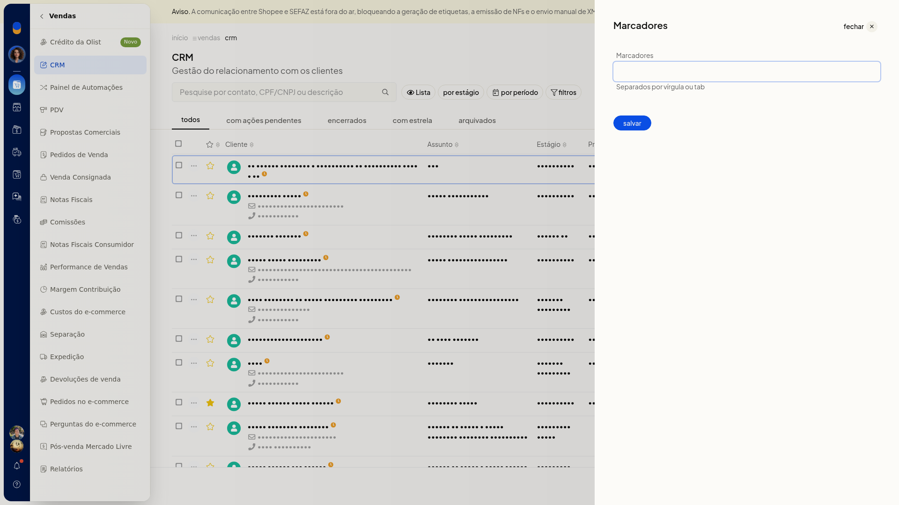
-
Clique em Salvar.
Como definir os dias sem interação
-
Acesse Configurações > Configurações ERP > Vendas > Configurações do CRM.
-
No campo Nº de dias para indicar que o crm está sem interação, informe o número de dias. O campo não é obrigatório.
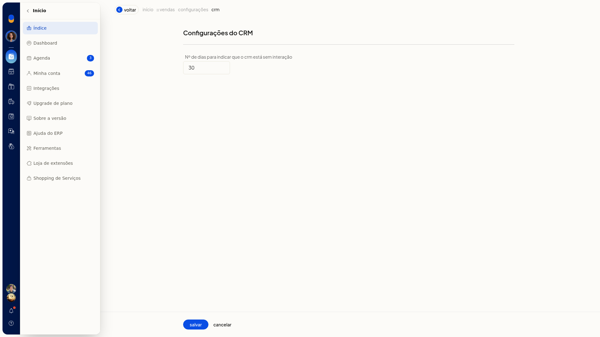
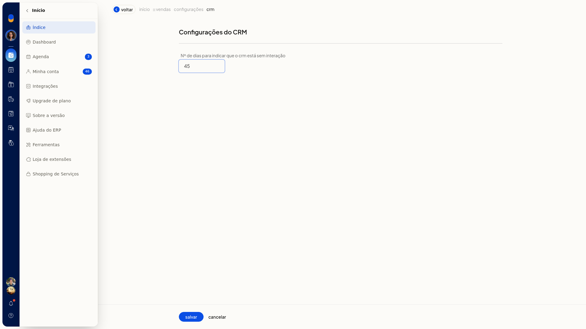
-
Clique em Salvar para gravar. Cancelar mantém o valor anterior.
Como cadastrar um marcador
-
Acesse Configurações > Configurações ERP > Vendas > Configurações dos marcadores no CRM.
-
Use a busca para localizar um marcador pela Descrição. O rodapé mostra a quantidade de marcadores.
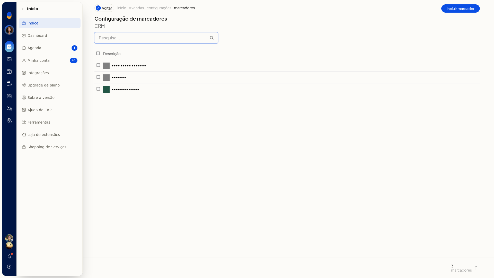
-
Clique em Incluir marcador.
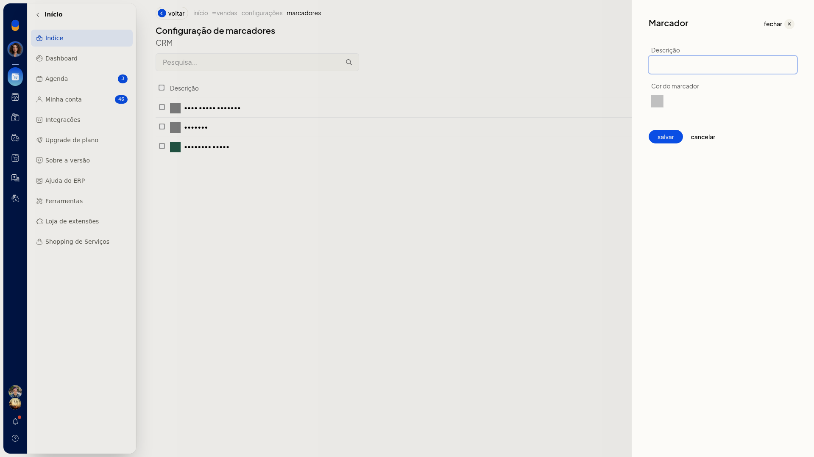
-
Informe Descrição. O campo não é obrigatório. Se quiser, abra Cor do marcador e escolha a cor na paleta.
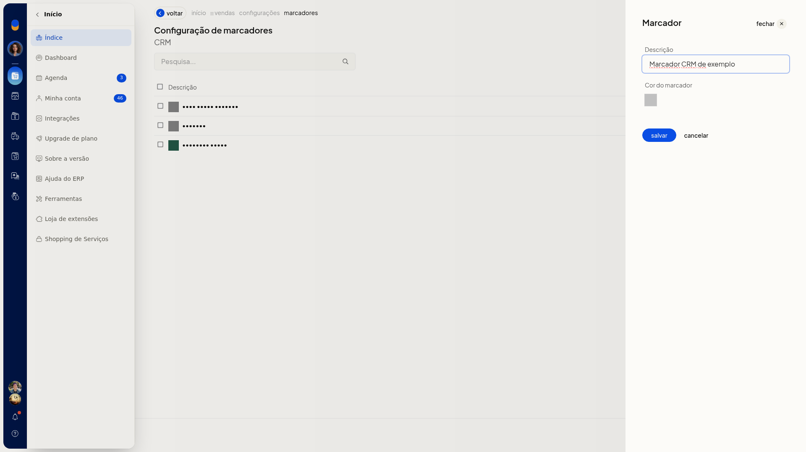
-
Clique em Salvar para criar o marcador. Cancelar volta à lista sem criá-lo.
Como cadastrar um estágio do funil
-
Acesse Configurações > Configurações ERP > Vendas > Configurações dos estágios no funil do CRM. A tela se chama Configuração dos estágios do funil de vendas.
-
Confira a coluna Descrição e os estágios já cadastrados: Prospecção, Contato realizado, Proposta apresentada, Negociação, follow up, Encerrado, Recuperação, Pós-Venda Ativo e Fidelização (LTV).
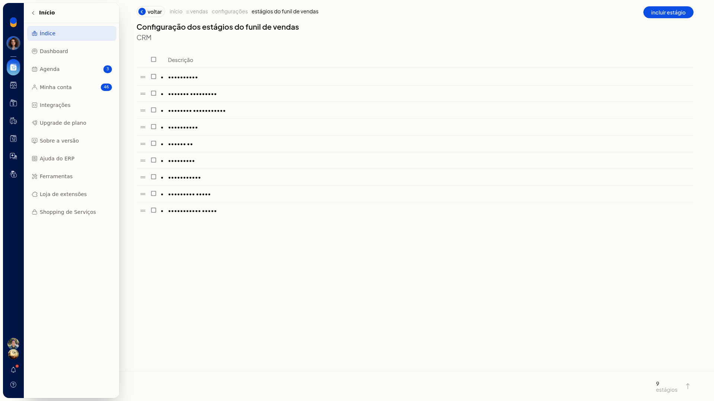
-
Clique em Incluir estágio.
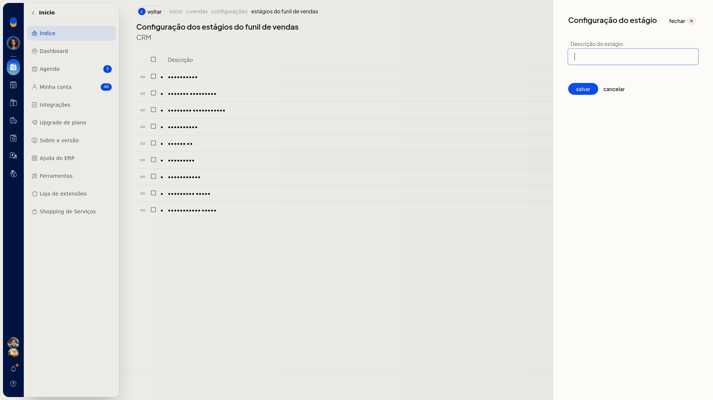
-
Informe Descrição do estágio. O campo não é obrigatório.
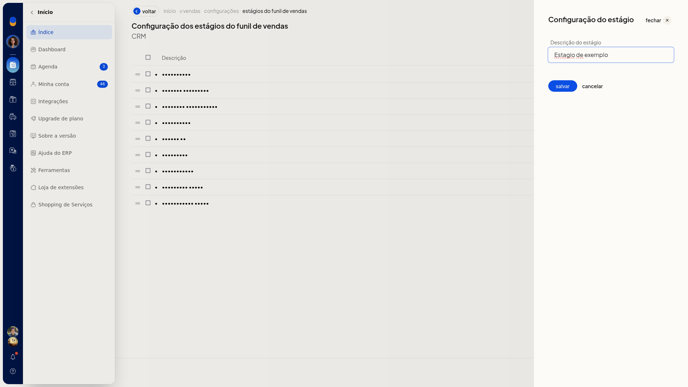
-
Clique em Salvar para incluir o estágio no funil. Cancelar volta à lista sem criá-lo.
Resultado
Na lista do CRM você acompanha os assuntos pelas abas, pela visão por estágio ou por período, com o rodapé separado em Quantidade, Leads, Prospects, Clientes e Inativos.
Informações adicionais
- Ícones de status identificam Lead, Prospect, Cliente e Inativo.
- No menu da linha do assunto também estão Editar assunto, Excluir assunto, Arquivar assunto e Alterar status do contato.
- O campo Nº de dias para indicar que o crm está sem interação define depois de quantos dias o CRM indica falta de interação.